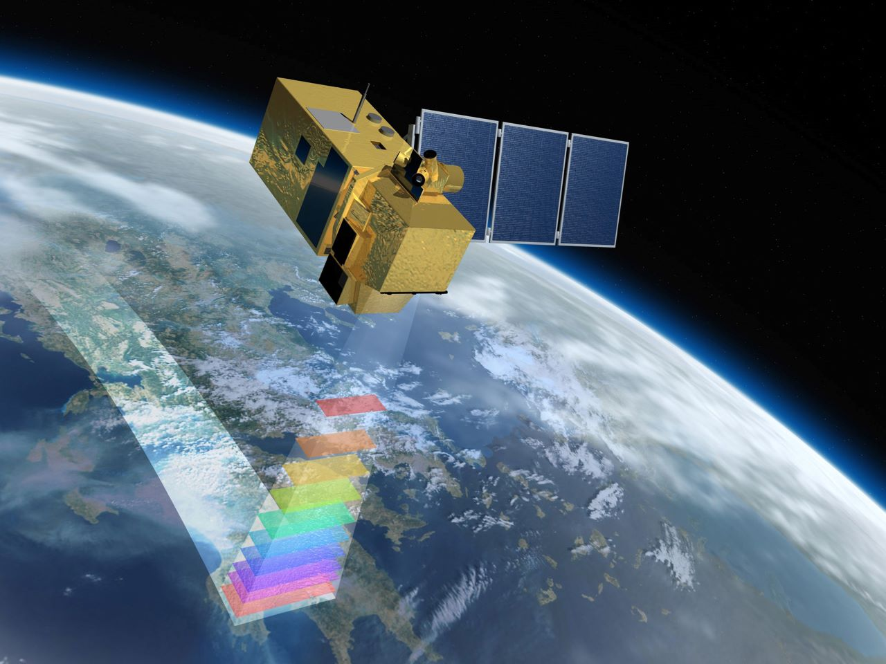
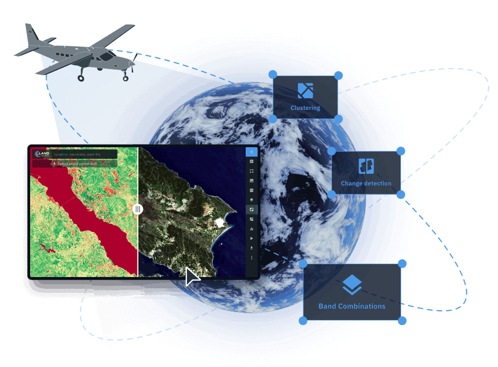
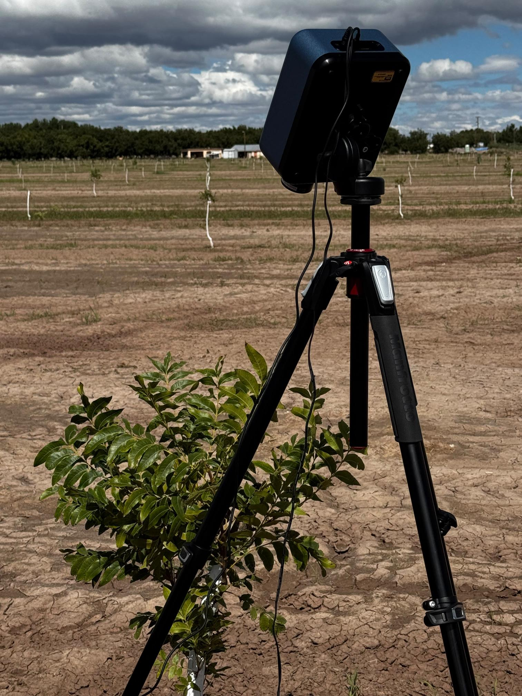

Remote Sensing Case Studies
The following case studies provide opportunities for students to apply remote-sensing concepts and image-processing techniques to agricultural and environmental problems.
Case Study 1: Agricultural Field Analysis Using Very High Altitude Imagery - Low Spatial and Spectral Resolution

- Analyze Sentinel-2 multispectral imagery to investigate vegetation conditions using vegetation indices within selected agricultural fields.
Case Study 2: Agricultural Field Analysis Using Low Altitude Imagery - High Spatial and Low Spectral Resolution

- Analyze NAIP aerial imagery and investigate to investigate vegetation conditions using vegetation indices in selected agricultural fields.
Case Study 3: Agricultural Field Analysis Using ground-level Imagery - Very High Spatial and Spectral Resolution

- Analyze hyperspectral imagery and investigate to investigate vegetation conditions using vegetation indices in selected agricultural fields.